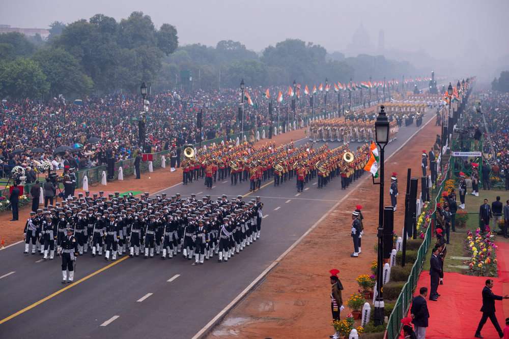

Republic Day is celebrated on January 26th to honor the day when the Constitution of India came into effect in 1950. It marks the shift from British rule to a republic, focusing on democracy, justice, and equality.
Republic Day is a national holiday celebrated across India, with the main event being the Republic Day Parade in New Delhi, showcasing India’s culture, military, and traditions.
The Republic Day Parade is a major highlight, where various states and groups display their cultural diversity, and the President of India hoists the national flag.
On this day, India also honors its freedom fighters and soldiers who contributed to the country’s independence and security.
Republic Day is celebrated with great enthusiasm and patriotism, with people singing the national anthem and remembering the country’s history.
Republic Day Parade

The Republic Day Parade is held at Rajpath in New Delhi It is the main attraction of Republic Day celebrations.
Military might and cultural performances The parade displays India's military strength and features cultural performances from different states.
Showcase of India's states and cultures Each state showcases its unique culture during the parade.
Flag-hoisting ceremony The parade culminates with the flag-hoisting ceremony by the President of India, who also delivers a speech.
Honoring freedom fighters and armed forces India honors its freedom fighters and armed forces, and the highest civilian awards like the Bharat Ratna and Padma Awards are given to deserving individuals.
Flag Hoisting :
January 26th, the flag is unfurled by the President : Droupadi Murmu
Cultural performances on 75th Republic Day celebrations at Kartavya path in New Delhi